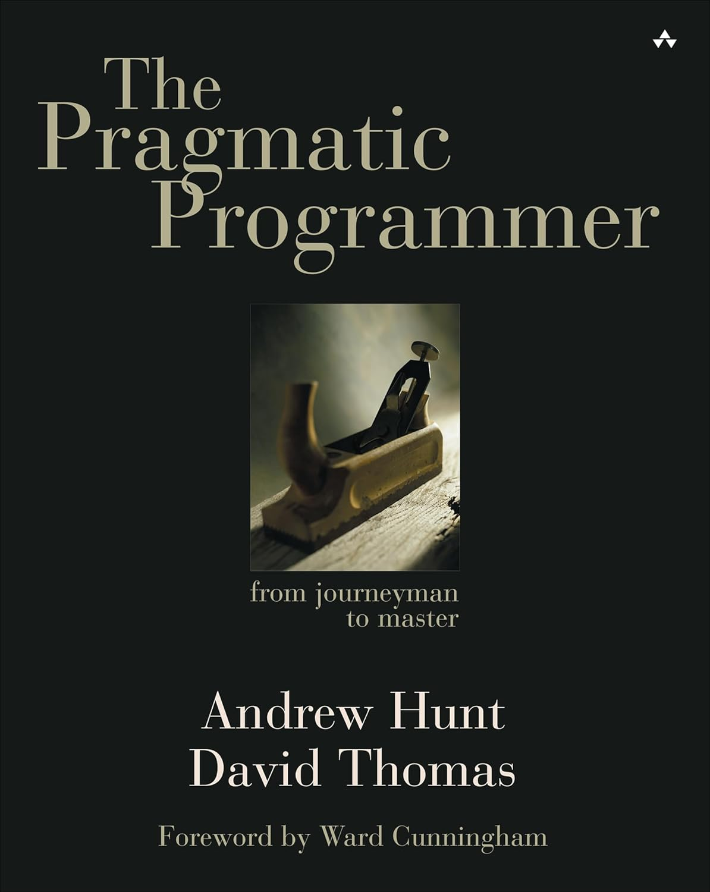
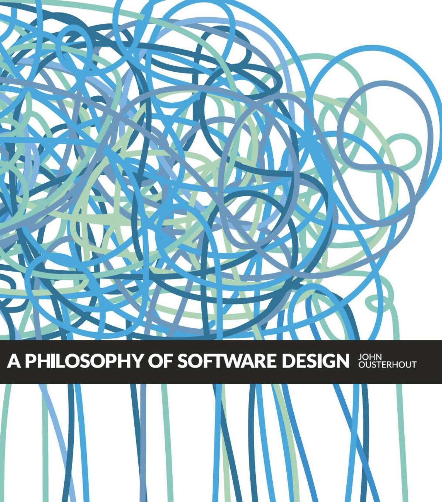

Currently reading
AI Engineering: Building Applications with Foundation Models
Why I'm reading it: We're living in the age of AI, so who am I to skip a book on the subject?
Code · Cameras · Books
No analytics, no tracking, just a private place to explore.
Rest, read articles, see some photos, and share your thoughts only if you want to.

Currently reading
Why I'm reading it: We're living in the age of AI, so who am I to skip a book on the subject?

The Pragmatic Programmer: From Journeyman to Master is a book about computer programming and software engineering, written by Andrew Hunt and David Thomas and published in October 1999.

"A Philosophy of Software Design" by John Ousterhout offers timeless principles for creating clean, maintainable code. It emphasizes deep modules, managing complexity, and thoughtful abstractions, making it a must-read for developers aiming to write better software.
George Orwell's 1984 is a dystopian masterpiece exploring themes of totalitarianism, surveillance, and the manipulation of truth. Set in a bleak future, it follows Winston Smith as he struggles against an oppressive regime that seeks to control every aspect of life.
Thanks for helping me to start my journey!
It might take a mental shift, but it can be worth it!
LLMs are really transforming software development with non-determinism, marking a shift as big as moving from assembly to high-level languages.